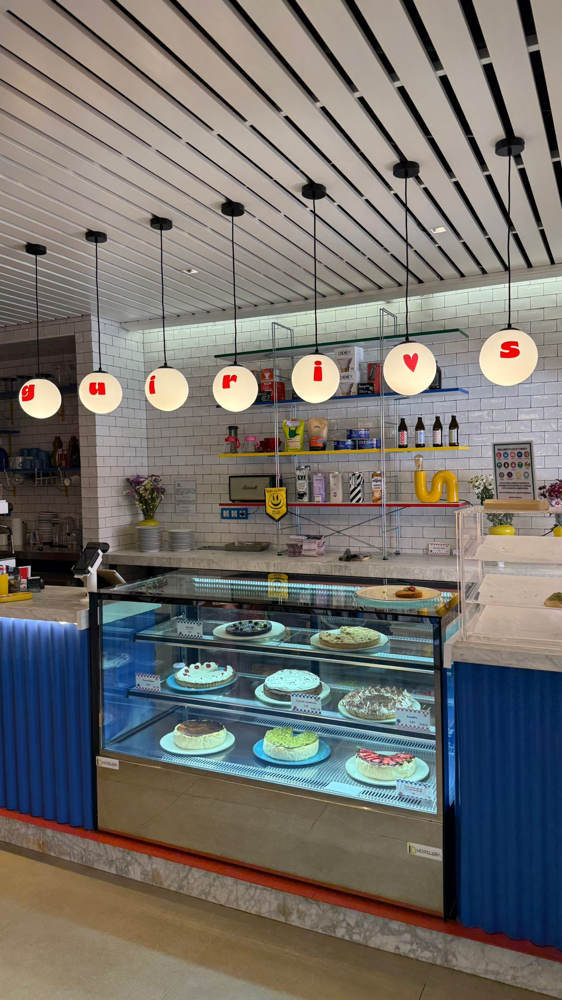
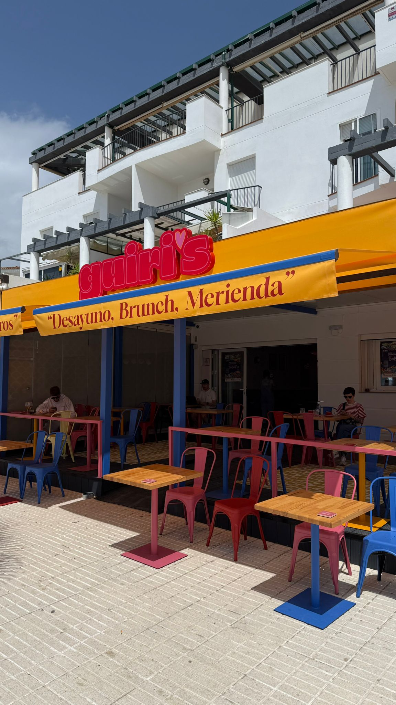
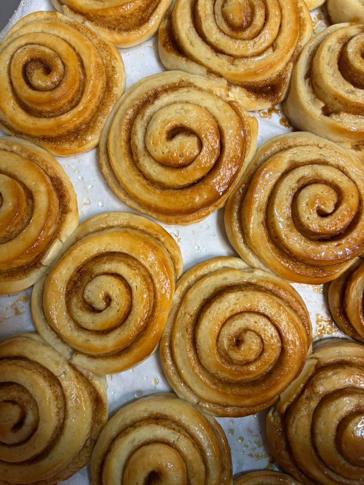
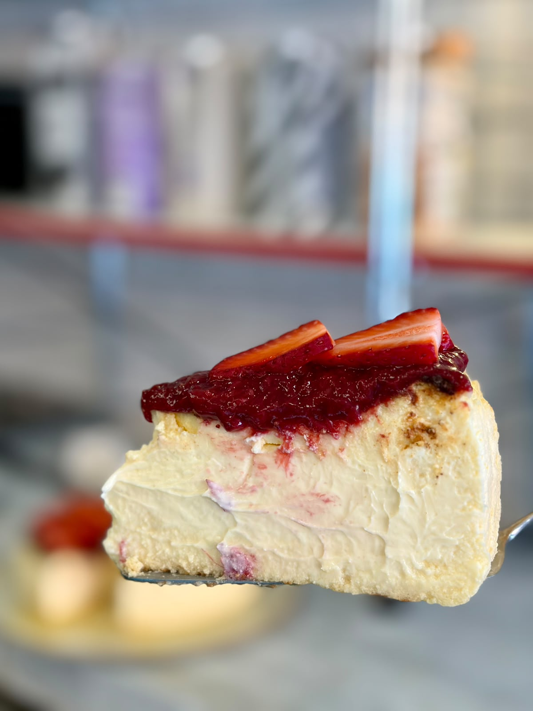
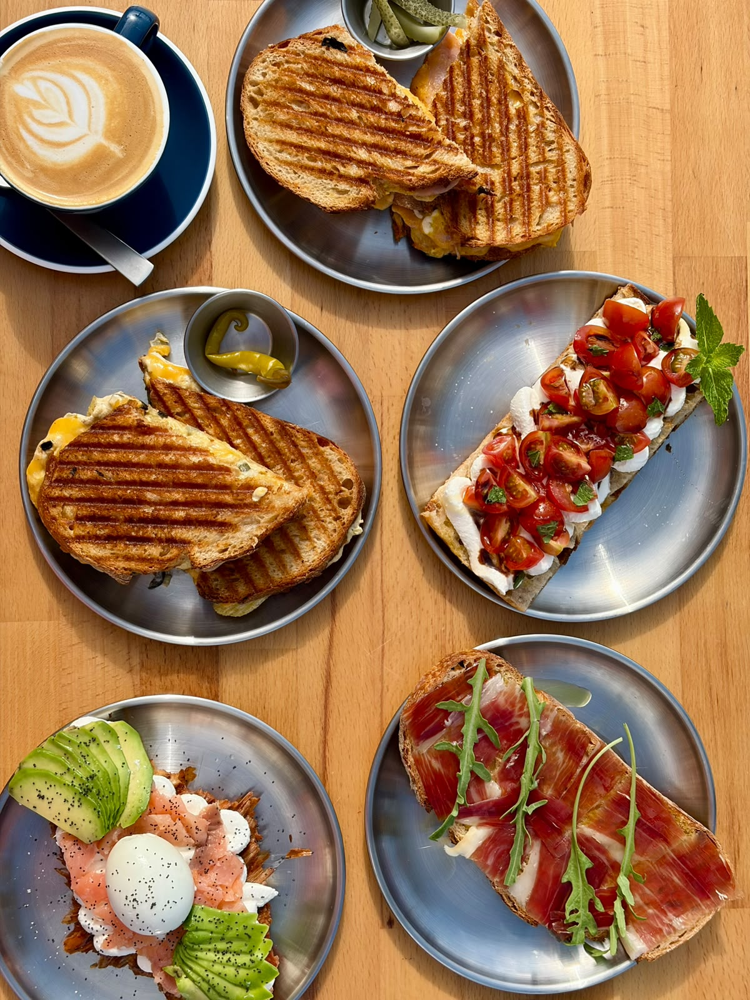
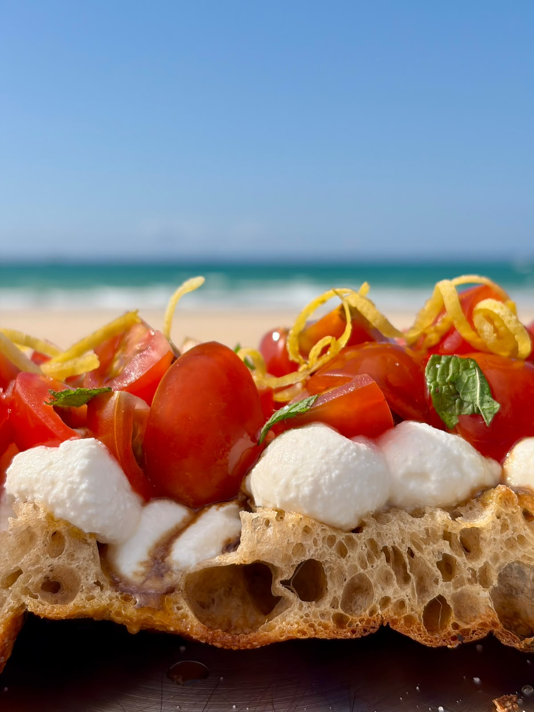
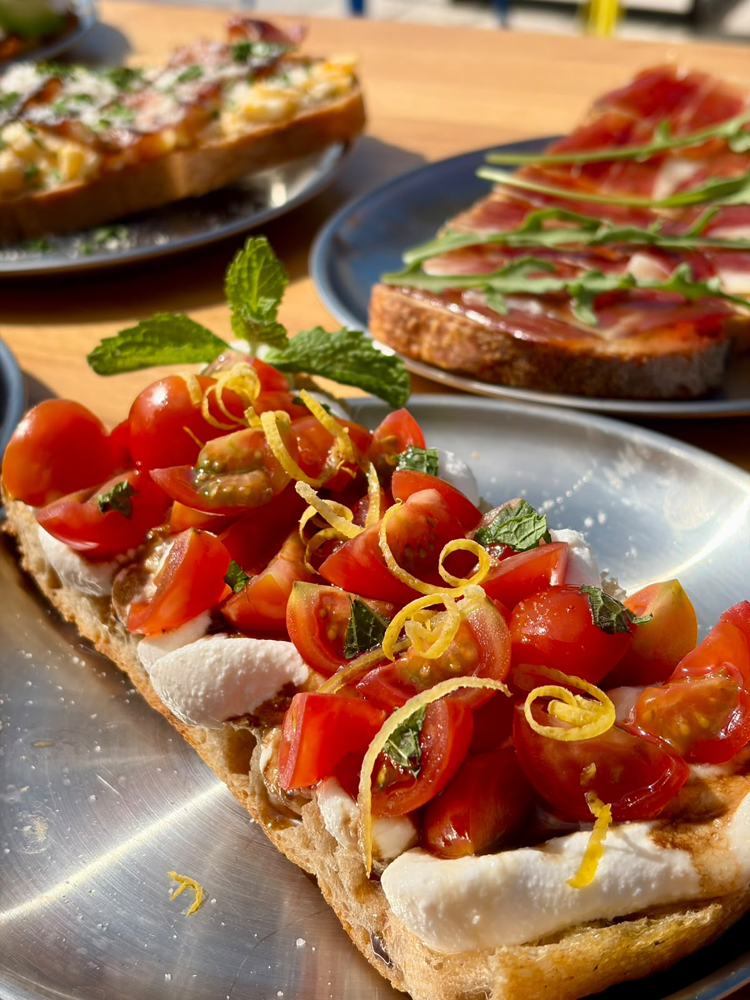
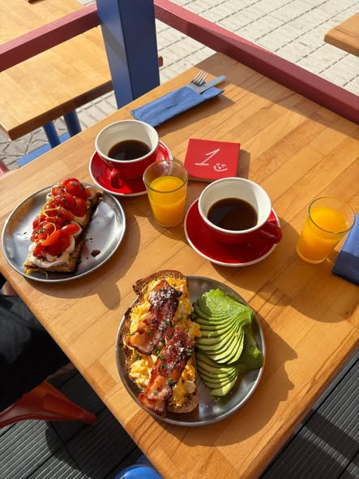
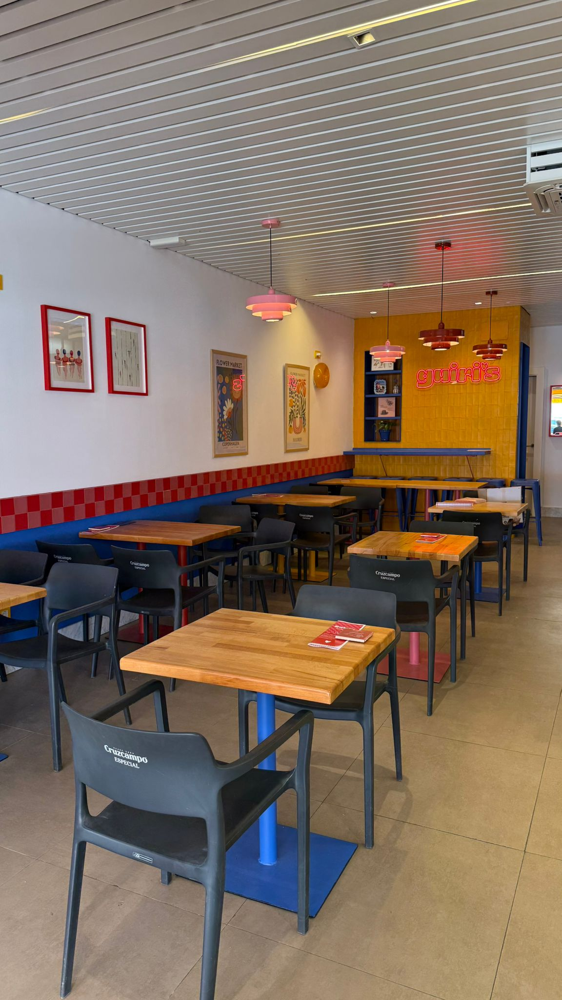

Tarta de queso
36 €Extraordinariamente cremosa, elaborada según la receta tradicional del País Vasco. Textura sedosa que se funde lentamente en el paladar.
specialty coffee & homemade pastries · barbate
“Desayuno, Brunch, Merienda”
Paseo Marítimo S/N · Barbate, CádizGranos 100% arábica de origen único, tostados por nuestro tostador de confianza HAYB (Varsovia), con leche fresca de vacas de Conil que nunca calentamos por encima de 70 °C para conservar su dulzor natural. El pan de masa madre viene de nuestra panadería de confianza, Pancultura (Vejer).
El plan perfecto entre desayuno y almuerzo, sin prisas. Ingredientes de primera y pan de masa madre de Pancultura (Vejer).
🌿 Todas nuestras tartas se hornean frescas cada día. Pregunta a nuestro equipo por la información de alérgenos.
Todas nuestras tartas se pueden encargar enteras para tus celebraciones. Horneadas por Asia con ingredientes de la máxima calidad, como todo lo que hacemos en Guiri's.
Extraordinariamente cremosa, elaborada según la receta tradicional del País Vasco. Textura sedosa que se funde lentamente en el paladar.
Una versión refinada de nuestra tarta de queso. El pistacho se presenta como crema pura de pistachos italianos de primera calidad, intensa y aromática.
Bizcocho especiado y fragante, con jengibre y canela, enriquecido con frutos secos. Húmedo, equilibrado y lleno de carácter.
Un juego perfecto de contrastes: crema de limón vibrante, merengue delicadamente dulce y una base de masa sablé de mantequilla.
Un clásico atemporal, sutil y refrescante, con una acidez elegante y perfectamente armonizada.
De textura untuosa e intensidad profunda, elaborado sin harina y únicamente con chocolate negro de alta calidad.
Base de cacao mantecosa, ganache de chocolate intenso y una delicada capa de pistacho o frutas. Sofisticada y visualmente impecable.
Un pastel de estilo clásico, ideal para celebraciones: esponjoso, elegante y de sabor universal.
Bizcocho delicado con frutas maceradas en vainilla natural, almendras y leche de almendras. Sutil, aromático y equilibrado.
Un postre icónico y espectacular: merengue crujiente horneado lentamente y crema ligera de nata y mascarpone. Con pistacho, frambuesa o limón. Efecto wow.
Masa sablé de mantequilla, caramelo salado, plátano maduro y crema suave de mascarpone, finalizado con finas virutas de chocolate.
Masa quebrada de mantequilla y manzanas confitadas lentamente con miel, canela, cardamomo y un toque de limón.
Selección de frutos del bosque ligeramente ácidos, aromatizados con vainilla, cubiertos por un crumble crujiente y dorado.
Haz tu encargo por WhatsApp o Instagram. Recomendamos avisar con antelación.
Somos Asia y Michał. Llegamos a esta costa casi por casualidad durante 2020, cuando descubrimos Los Caños de Meca y nos quedamos unos meses teletrabajando frente a playas vacías, con el faro de Trafalgar como única compañía. Cada año la estancia se alargaba un poco más, hasta que decidimos que ya no queríamos irnos: nos empadronamos y hoy somos barbateños.
Michał venía del mundo del software; Asia, periodista y comunicadora, dirigía las redes sociales de la radio nacional de Polonia. Pero queríamos hacer algo tangible y real: devolver a Barbate todo el cariño que este pueblo nos ha dado desde el primer día.
“Para la pasión nada son 3.500 kilómetros.”
Reformamos el local con nuestras propias manos —Asia puso hasta los azulejos— y en junio de 2025 abrimos Guiri's en el Paseo Marítimo de Barbate. Antes habíamos pasado meses vendiendo dulces en mercadillos de Zahora y Los Caños, y la respuesta de la gente fue el empujón definitivo.
Asia aprendió a hornear con sus dos abuelas y la repostería siempre fue su refugio. En nuestra vitrina conviven los cinnamon rolls al estilo danés —el producto estrella—, la tarta de queso al estilo vasco, opciones sin gluten y sin lactosa, y de vez en cuando dulces de la infancia polaca de Asia, como la szarlotka (tarta de manzana) o la karpatka. El café es de especialidad: filtrados en V60 y Aeropress, cold brew, tónica espresso y un matcha con público fiel.
El nombre lo dice todo: guiri significa alguien de fuera, y eso somos. Pero hemos echado raíces aquí, en Andalucía, y hoy no nos imaginamos en ningún otro sitio.
📰 Lee el reportaje completo en Andalucía Información.


Todo lo que ves se hornea y se emplata aquí, cada día.







"We drove from Tarifa because we heard the coffee was great — and we were not disappointed! Everything was delicious, especially the cheesecake."
Reseña de Google"A lovely place run by lovely people. The avocado toast, cinnamon rolls and cheesecake were all so delicious. We'll definitely be back!"
Reseña de Google"All homemade cakes are delicious — you should definitely try the cinnamon rolls. Every coffee lover will find their favourite here."
Reseña de Google"Best coffee place in town! The selection of cakes is to die for. They do everything in house and the quality is at the top."
Reseña de Google"We saw this place whilst walking by and glad we stopped. Friendly staff with excellent coffee — I recommend the cheesecake and cinnamon buns."
Reseña de GoogleLa creadora gaditana de contenido gastronómico pasó por Guiri's — mira su vídeo:
📍 Dirección
Paseo Marítimo S/N, 11160 Barbate (Cádiz)
🕒 Horario
Martes a domingo: 8:30–13:30 y 15:30–21:00
Lunes cerrado
📞 Teléfono
+34 611 80 84 93
🗺️ Google Maps
Cómo llegar
🇬🇧 English menu
menu.guiribakes.es